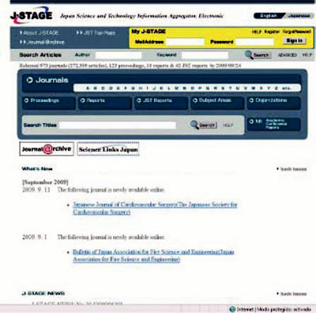
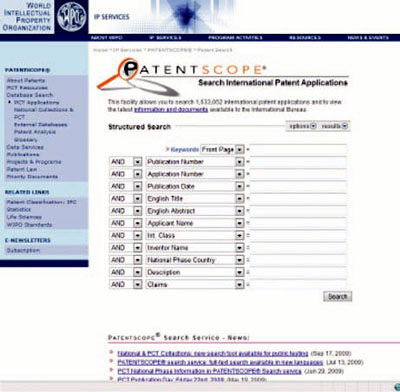
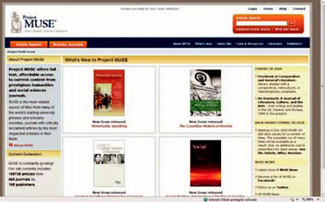

Japan Science and Technology Information Aggregator http://www.jstage.jst.go.jp/browse/
Canadian Film Encyclopedia Search http://www.filmreferencelibrary.ca/index.asp?navid=46

Academic Archive On-line http://www.diva-portal.org/index.xsql?lang=es
Búsqueda de tesis doctorales y algún otro tipo de publicación del tipo de tesinas, informes...
Limitado a las universidades que aparecen en el menú. Muchos resultados están a texto completo.
Thomas Register of America Manufacturers http://www.thomasnet.com/
Información sobre productos, empresas y marcas de EEUU y Canadá. Gratuito, pero requiere suscripción.
Estadísticas de Extremadura http://www.estadisticaextremadura.com/
Distribución territorial de apellidos (Datos del Padrón a 1-1-2006) http://www.ine.es/fapel/FAPEL.INICIO
Bibliothèque nationale de France http://www.bnf.fr/pages/zNavigat/frame/version_espagnole.htm?ancre=espagnol.htm
Patent Scope Search International Patent Applications. http://www.wipo.int/pctdb/en/
Fuentes de búsqueda de Tesis doctorales: Tesis de la Universidad de Barcelona.. http://www.bib.ub.edu/recursos-informacio/tesis-doctorals/
Project MUSE. http://muse.jhu.edu/
Project Muse ofrece a texto completo, el acceso asequible a los contenidos actuales de las humanidades y las ciencias sociales de prestigiosos diarios.
MUSE es la fuente más fiable de los títulos de muchas de las editoriales universitarias más importantes del mundo y sociedades científicas, revistas con artículos aclamada por la crítica de los académicos más respetados en sus campos.
Sentencias del Tribunal Supremo http://poderjudicial.es/eversuite/Getrecord?Template=cgpj/ts/principal.htm
